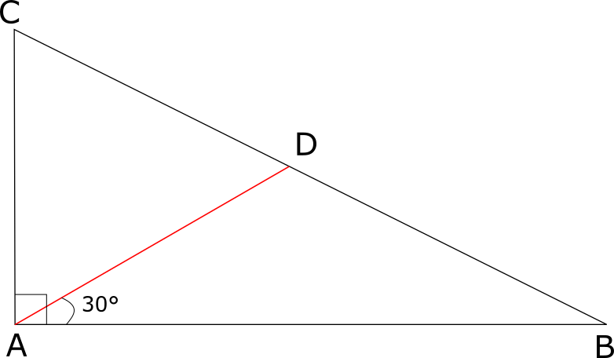

問題
\(\angle A=90^\circ\) である直角三角形 \(ABC\) において, \(AB=2\), \(CA=1\), \(\angle A\) の三等分線が 辺 \(BC\)と交わる点のうち \(B\) に近い点を \(D\) とする。 この時, \(AD\) の長さを求めなさい。
注目ポイント！
図形の条件が示されている。
解答への第一歩
- 図形の問題なら、実際に近い状態の図形を作図する
解説
正弦定理より, \(\triangle ADC\) において,
\(\frac{AD}{\sin{C}} = \frac{CD}{\sin{\frac{\pi}{3}}}\)
\(\angle CDA = \angle A + \angle B = 30^\circ + \angle B\)であるから，
\( \begin{eqnarray} \sin{\angle CDA} &=& \sin{(30^\circ + \angle B)}\\ &=& \sin{30^\circ}\cos{\angle B} + \cos{30^\circ}\sin{\angle B}\\ &=& \frac{1}{2}・\frac{2}{\sqrt{5}} + \frac{\sqrt{3}}{2}・\frac{1}{\sqrt{5}}\\ &=& \frac{2 + \sqrt{3}}{2\sqrt{5}} \end{eqnarray} \)
また, \(\triangle ADC\)について, 正弦定理を利用すると,
\( \begin{eqnarray} \frac{AD}{\sin{C}} &=& \frac{1}{\sin{\angle CDA}}\\ AD &=& \frac{\sin{C}}{\sin{\angle CDA}}\\ &=& \frac{2}{\sqrt{5}}・\frac{2\sqrt{5}}{2+\sqrt{3}}\\ &=& \frac{4}{2+\sqrt{3}}\\ &=& \frac{4(2-\sqrt{3})}{4-3}\\ &=& 4(2-\sqrt{3})\\ \end{eqnarray} \)